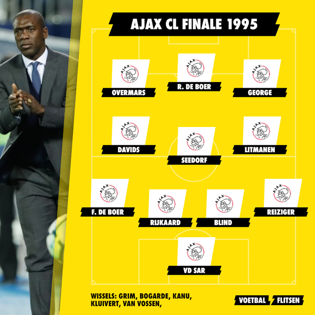

Het elftal van Ajax in 1995 was het beste team ooit.
In dat zelfde
jaar
hebben ze zelfs de Champions League gewonnen dankzij de goal van Patrick Kluivert. Ajax werd dat jaar ook
landskampioen, ze hebben niet eens één wedstrijd verloren. De coach van deze team was Louis van Gaal.
Hoe
goed was het Ajax met Louis van Gaal
als coach? In dit menu vind je de clublegendes van Ajax, sommige zelfs in hun beste vorm.

Edwin van der Sar
Hij was één van de beste en langste keepers uit zijn tijd. Edwin van der Sar kwam bij Ajax in 1990 en speelde tot 1999. Tijdens de Champions League van 1995 stond Van der Sar 11 keer op goal, hij kreeg maar 4 goals tegen en had 8 keer de nul gehouden. In 1999, 4 jaar na het winnen van de Champions League, ging Van der Sar naar Juventus in Italië.

Danny Blind
Danny Blind is één van de voetballers die alle Europese clubprijzen heeft gewonnen. Hij won alle prijzen met Ajax, van de UEFA Cup (nu Conference League) tot aan de Champions League. Blind kwam in 1989 bij Ajax spelen, daarvoor speelde die bij een amateurclub in Zeeland, RCS. In 1999 stopte Danny Blind met voetballen, hij was toen 38 jaar oud.

Frank Rijkaard
Rijkaar heeft twee keer de Champions League gewonnen, één keer met Ajax in 1995 en één keer met AC Milan in 1989. Tijdens de Champions League finale in 1995 speelde Rijkaard als centrale verdediger, maar hij werd vaak ook als verdedigende middenvelder opgesteld. In diezelfde finale had Rijkaard één van zijn belangrijkste assists gegeven, hij gaf de assist aan Patrick Kluivert die de beslissende goal maakte. Dat was Rijkaard zijn voorlaatste wedstrijd van zijn carriére.

Michael Reiziger
Reiziger kwam uit de jeugd van Ajax. Na zijn verhuurperiodes aan FC Volendam em FC Groningen speelde Reiziger in het seizoen 1994/95 als vaste rechtsback in het elftal van Van Gaal. Bij Ajax speelde hij 93 duels. Later speelde de rechtsback ook nog bij FC Barcelona en AC Milan.
Frank de Boer
Frank de Boer speelde als linksachter bij het elftal van Ajax. Hij speelde in totaal 430 duels voor Ajax vanaf 1988 tot 1999. De linksachter speelde ook voor de teams FC Barcelona en Galatasaray. Als trainer van Ajax werd Frank de Boer maar liefst 4 keer landskampioen.

Clarence Seedorf
Seedorf is de eerste voetballer ooit die met 3 verschillende clubs de Champions League heeft gewonnen. Seedorf debuteerde op 16-jarige leeftijd bij Ajax en vertrok naar Italië bij de club UC Sampdoria. Later in zijn carriére speelde Seedorf bij AC Milan, waar hij 2 keer de Europese prijs won. Hij heeft zeker een goede carriére gehad bij Ajax.
Jari Litmanen
Jari Litmanen, ook wel Litti genoemd, speelde tussen 1992 en 1999 bij Ajax. Hij won in de tijd vijftien prijzen. Tijdens het seizoen van 1994/1995 had de middenvelder zes goals en één assist in de Champions League, twee doelpunten waren in de halve finale tegen Bayern München. Litmanen speelde in totaal 255 duels voor Ajax, daarna ging hij naar FC Barcelona.
Edgar Davids
Davids speelde als sinds de jeugd bij Ajax. Hij speelde als centrale middenvelder voor de Ajacieden. Ookal speelde Davids niet altijd als basisspeler bij Ajax, in de Champions League finale tegen AC Milan speelde hij de volle 90 minuten. Edgar speelde zijn laatste wedstrijd voor Ajax in de Champions League finale in 1996. Deze wedstrijd verloor Ajax van Juventus, waar Davids daarna zou gaan spelen.
Finidi George
De Nigeriaanse rechtsbuiten kwam van Shark FC naar Ajax in 1993. George scoorde in de halve finale van de Champions League in 1995 tegen Bayern München. Uiteindelijk speelde Finidi George 122 duels voor Ajax waarin hij 24 keer scoorde. George scoorde in de Super Cup-finale in 1996 tegen Real Zaragoza.
Marc Overmars
Hij werd gekocht in 1992 door Ajax van Willem II voor 900 duizend euro. De linksbuiten speelde uiteindelijk 190 duels voor Ajax waarin hij 44 keer scoorde en 42 assists had. In 1997 ging Overmars naar FC Arsenal voor 7,5 miljoen euro. Overmars was vanaf 2012 tot 2022 de directeur voetbalzaken van Ajax.
Ronald de Boer
Samen met zijn broer, Frank, won Ronald de Boer de Champions League. Ronald de Boer stond vaak in het veld als rechtsbuiten, maar begon de finale in de spits. De aanvaller vertrok na 304 duels bij Ajax, om samen met zijn broer bij FC Barcelona te gaan spelen. Ook De Boer scoorde en gaf een assist in de halve finale tegen Bayern München.
Top 10 beste reddingen van Van der Sar!
Zie hier de beste momenten van Frank Rijkaard
Top 10 goals van Seedorf
Een korte samenvatting van de finale
Zo zag de opstelling eruit van het team van Ajax in 1995: